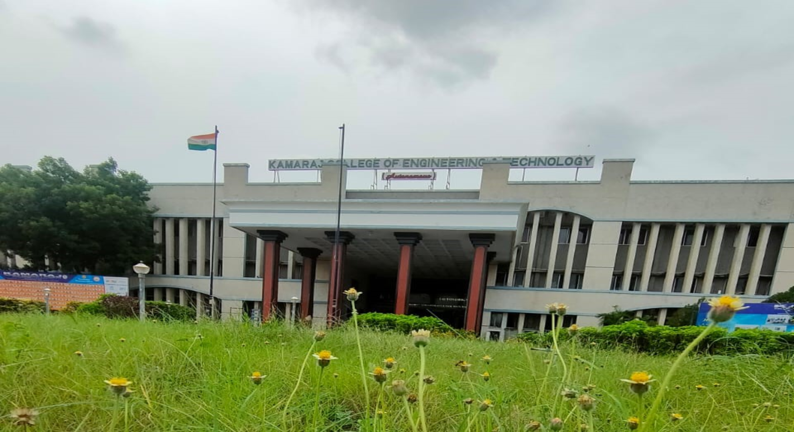
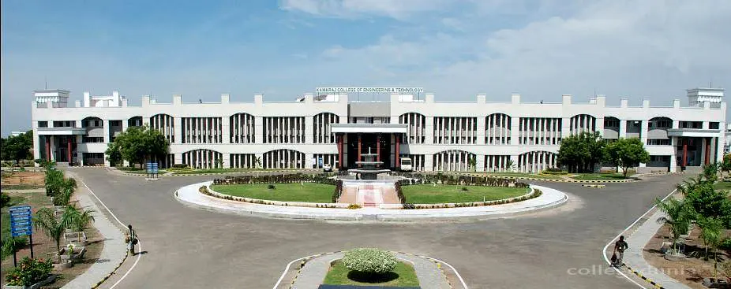

ABOUT US

Our College was established in the year 1998. It is promoted and supported by Virudhunagar Hindu Nadars' Devasthanam, various Hindu Nadars' Mahamai Tharappus in Virudhunagar and other places and educational institutions of Virudhunagar.KCET has been granted Autonomous status by the University Grants Commission for 10 years from 2019 to 2029. It is a technical institution offering undergraduate, postgraduate and doctoral programs in engineering and technology. It is promoted and supported by virudhunagar Hindu Nadars' devasthanam, Mahamai Tharappus in Virudhunagar, educational institutions of Virudhunagar and other organizations
College Overview

Kamaraj college of Engineering and Technology has been Recognized as a "Scientific and Industrial Research Organization (SIRO)" by the Department of Scientific and Industrial Research (DSIR), New Delhi.
Kamaraj Research forum focus to create a Research ambience and improve the quality of Research in the college thereby creating a conductive environment for enhanced research productivity in terms of publications, patents, products and funded projects. It aims promoting research in the emerging and challenging areas of Science, Engineering and Technology. It encourages the students and Faculty members to participate in conferences, seminars, workshops, project competition, etc. It promotes researchers to identify potential collaborators from industry, research organizations and academic institutions. It is actively involved in preparing database of the in house expertise available to provide Industrial consultancy and services.
ENVIRONMENT

The students hostel offers a variety of infrastructural facilities, including ceiling fans, tables, chairs, cupboards, and a writing pad are provided in each room, bathroom, recreational facilities, gymnasium, purifier, medical facilities, 24*7 Wi-Fi internet connection, tuck shop, CCTV surveillance camera, newspaper reading room, residential doctor to render service to the hostel students and computer room with 16 systems with 45 Mbps internet connection.
During working hours, a well-equipped dispensary is accessible on campus. Students who require medical assistance can receive it immediately because the institute has a full-time doctor on campus.A well-equipped gymnasium is available within campus for students and faculty members.
The library is fully automated and well-equipped with modern amenities. The library has books, journals, CD-ROMs, online journals, question banks, project reports, and other materials. Surveillance video cameras are placed at strategic locations.
The books and journals are accessed using an Open Access System.The institute has a well-modernised computing environment within the campus, with modernised computer labs with high-configuration computer systems, to meet the demands of industries and to improve the learning of the students.
liIn the canteen, hygienic and nutritious foods are available at a reasonable price. A tuckshop is also available that sells snacks and soft drinks for students.A well-equipped laboratories that cater to the academic needs of students. During working hours, students can make use of the lab at any time.
VISSION
To Make this Institution the unique of its kind in the field of Research and Development activities in this part of world.
MISSION
To impart highly innovative and technical knowledge to the urban and unreachable rural student folks through "Total Quality Education".
QUALITY POLICY
To impart highly innovative and technical knowledge to the urban and unreachable rural student folks through "Total Quality Education".
Home page